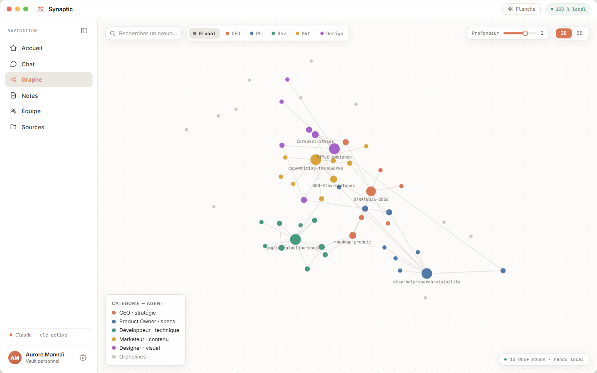
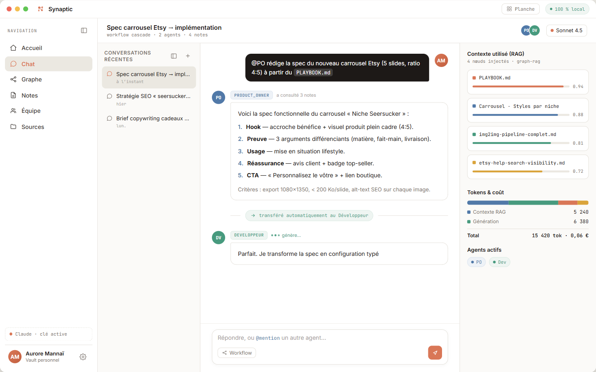

00Synaptic, c'est quoi ?
Une application de bureau qui transforme tes fichiers (cours, notes, PDF) en un graphe de connaissances. Une équipe de cinq agents IA travaille dessus et te répond à partir de tes notes, pas d'internet.
Tout reste sur ton ordinateur : tes fichiers ne partent sur aucun serveur.

Maquette · écran Graphe
01Le poste
Dev front, encadré·e par Alexis Lamonnier, responsable de l'interface de Synaptic. Tu travailles sur tout ce que l'utilisateur voit et touche.
02Ce que tu feras
- Le graphe en 3DLes fichiers deviennent des nœuds reliés entre eux, qu'on explore à la souris.
- Le chat des agentsL'écran où les agents répondent, se passent le travail et montrent les notes qu'ils ont utilisées.
- L'éditeur de notesLà où l'utilisateur écrit et relit ses fichiers Markdown.
- React
- TypeScript
- Tauri
- Git
03Ce qu'on attend
Pas besoin de savoir coder en React : Alexis t'apprend.
Ce qu'on demande : de la curiosité et l'envie d'apprendre. Si tu as déjà fait un peu de HTML ou de CSS, tant mieux, mais ce n'est pas obligatoire.
Le rythme se définit ensemble, en entretien.
04Ce que tu y gagnes
- Un mentorat par trois M1On t'accompagne, on répond à tes questions et on relit ton code avec toi.
- Des compétences en IAAgents, Claude, graphe de connaissances : tu apprends en construisant une vraie app.

Maquette · écran Chat
05L'équipe
AL
Alexis LamonnierInterface, graphe, éditeur · ton mentor
LW
Lucien WerquinAgents IA et données
RR
Raji RahouiPlateforme et sécurité